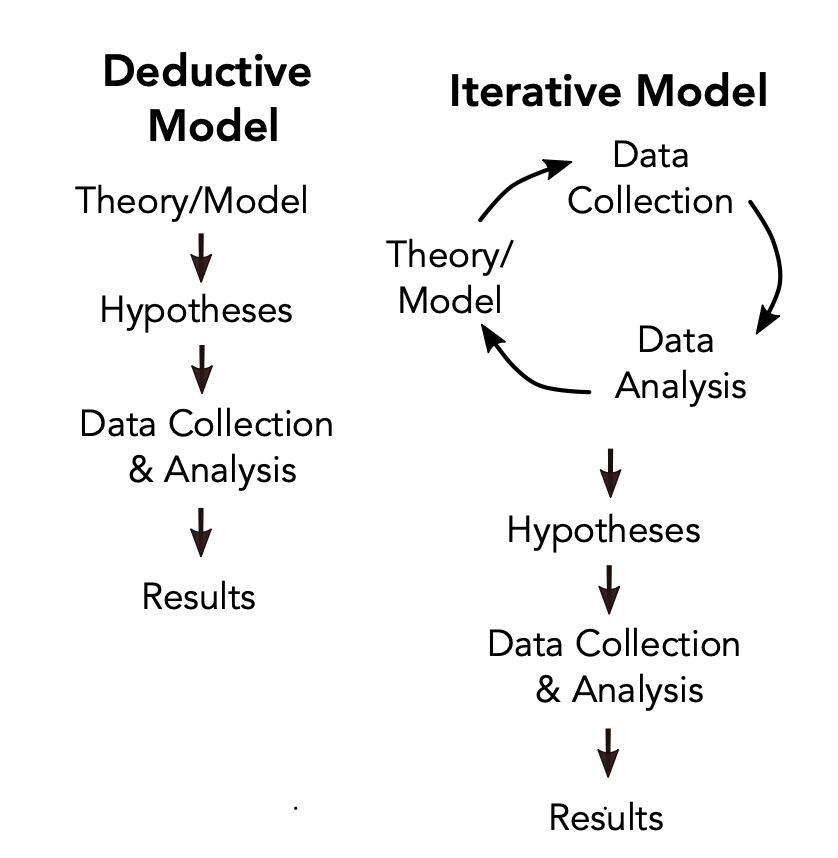
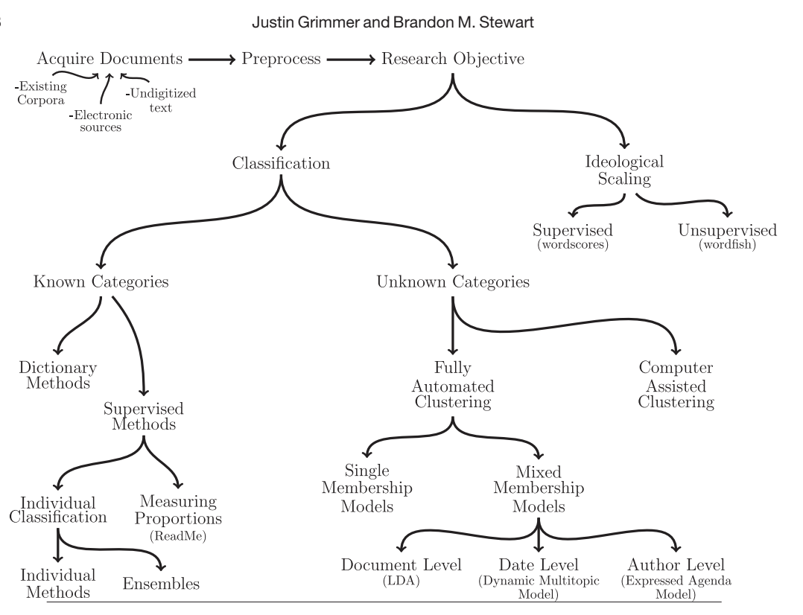

Text as Data
![]()
Week 1
Why should we take text as data?
Availability!
Text and language are integral components of political science.
This field is HOT right now. Very accessible.
Opens up exciting new opportunities for measurement and inference.
a lot of text analysis is discovery - this can shape our question moving forward. The process is somewhat inductive.
What can we learn?
social media data gives us real-time measures of mass and elite behavior
Text of floor speeches, press releases, supreme court briefs, and manifestos offer new measures of ideological scaling.
Web-scraping repeatedly can show us how authoritarian regimes censor content and control information.
The language in books and magazines over time can show us how social attitudes have evolved.
Week 2 (Labor Day - No Class)
Week 3 - Introduction to Text as Data:
Lecture Notes:
A fundamentally qualitative exercise:
substantive knowledge and deep contextual understanding is essential to determine relevant quantities of interest.
is the method appropriate?
is this thing I measured actually capturing what I want?
automated approach allows humans to read, organize, and analyze documents at scale.
Data Generating Process:
Agnostic about model selection
as long as we can accurately measure what we care about.
all text models are wrong!
evaluate models based on their ability to perform a useful social scientific task.
Validation:
Face validity?
Does the text measure correlate with similar measures?
How does the measure compare with our bets guess at “ground truth”?
What automated approaches can and can’t do:
Algorithms are really good at sorting.
good at compressing texts into lower dimensions.
With supervised tasks, if a human can’t do it a machine (usually) can’t either.
Big Data Challenges:
Just because data is really big, doesn’t mean it’s representative.
Just because we have statistical significance but it substantively isn’t meaningful.
Ethics:
Just because data is publicly available doesn’t mean you don’t need to protect subjects.
Prioritize subjects over reproducability
Following platforms’ terms of service is sometimes at odds with open science.
Do the best you can but don’t violate ToS if possible.
Theory Build or Theory Testing?
Theory building: develop a new argument or concept to explain something that is not understood well
theory testing: takes an existing theory and apply it to new cases or-evaluate existing cases etc. This can also result in the modification of an existing theory.
How do I collect data?
APIs
Webscraping
OCR
Grimmer, Justin, Margaret Roberts, and Brandon Stewart. Text as Data, Chapters 1-2.
(Textbook)
Chapter 1:
The book uses text as data methods from computer science for social science purposes.
Big use of inductive reasoning.
Rather than a focus on prediction, text as data researchers are much more interested in how well their models provide insights into concepts of interest, how well measurement tools sort documents according to those rules, and how well the assumptions needed for accurate causal inference or prediction are met.
Texts can be organized differently. No one correct organization
we can then find the best measurement of that particular organization
can be tested with extensive validation.
- what is the utility to answering the research question becomes of key interest.
Authors reject views that there is an underlying structure that statistical models applied to text are recovering. Rather, we view statistical models as useful (and incorrect) summaries of the text documents.
Chapter 2:
Typical social science research is deductive
Theory > data > test
Empirical Implications of Theoretical Models
- use theory to create formal game model then use the game theory model to extract predictions. Then collect data to test those predictions.
strict deductive research can lead to missed opportunities in new questions + strategies.
Authors argue there is value in inductive reasoning and using an iterative approach for text analysis.
Methods to analyze text as data can contribute to inference at three stages of the process: discovery, measurement, and inference.
Discovery:
Discovery - develop a research question
the task of deciding what you want to measure from data and goal of inference.
need to conceptualize the world.
You want to analyze social media, okay, but what aspect?
topical content, sentiment, readibility, etc.
- text analysis helps us discover what part we want to look at through the inductive process.

- By pointing out new ways out of organizing the document, we can read the text differently and prompt new questions.
Measurement:
- researchers have to demonstrate that their method of measurement does indeed describe the concept or behavior they want to measure—that is, they have to validate their measures and provide evidence that the described quantities are relevant to the theoretical quantity at hand.
Inference:
predictions about events
used for causal inference.
Agnostic approach to Text Analysis:
No true underlying data-generating process
- just a bunch of different ones with different insights.
Six Principles of Text Analysis:
Theory and substantive knowledge are essential for research design (Section 2.7.1)
Text analysis does not replace humans—it augments them (Section 2.7.2)
Building, refining, and testing social science theories requires iteration and cumulation (Section 2.7.3)
Text analysis methods distill generalizations from language (Section 2.7.4)
The best method depends on the task (Section 2.7.5)
Validations are essential and depend on the theory and the task (Section 2.7.6)
Henry E. Brady. 2019. “The Challenge of Big Data and Data Science.” Annual Review of Political Science.
Abstract:
Big data and data science are transforming the world in ways that spawn new concerns for social scientists, such as the impacts of the internet on citizens and the media, the repercussions of smart cities, the possibilities of cyber-warfare and cyber-terrorism, the implications of precision medicine, and the consequences of artificial intelligence and automation. Along with these changes in society, powerful new data science methods support research using administrative, internet, textual, and sensor-audio-video data. Burgeoning data and innovative methods facilitate answering previously hard-to-tackle questions about society by offering new ways to form concepts from data, to do descriptive inference, to make causal inferences, and to generate predictions. They also pose challenges as social scientists must grasp the meaning of concepts and predictions generated by convoluted algorithms, weigh the relative value of prediction versus causal inference, and cope with ethical challenges as their methods, such as algorithms for mobilizing voters or determining bail, are adopted by policy makers.
Bumper Sticker:
Big data changed poli sci a lot - and there is more work to be done!
Background:
So much information causing overload -> fragmentation of information flows.
- good material explanation of maybe why people can chose their preferred media source.
Big data \(\neq\) better inference.
- this is true if our data collection process is bad/false/problematic.
Grimmer, Justin and Brandon Stewart. 2013. “Text as Data: The Promise and Pitfalls of Automatic Content Analysis Methods for Political Documents” Political Analysis. 21, 3 267-297.
Abstract:
Politics and political conflict often occur in the written and spoken word. Scholars have long recognized this, but the massive costs of analyzing even moderately sized collections of texts have hindered their use in political science research. Here lies the promise of automated text analysis: it substantially reduces the costs of analyzing large collections of text. We provide a guide to this exciting new area of research and show how, in many instances, the methods have already obtained part of their promise. But there are pitfalls to using automated methods—they are no substitute for careful thought and close reading and require extensive and problem-specific validation. We survey a wide range of new methods, provide guidance on how to validate the output of the models, and clarify misconceptions and errors in the literature. To conclude, we argue that for automated text methods to become a standard tool for political scientists, methodologists must contribute new methods and new methods of validation.
Overview:

Background:
Just because one text method works well on one data set does not mean it will work will on a different dataset.
Classification - organizes texts into a set of categories
Dictionary method - use the frequency of key words to determine a document’s class
supervised methods: hand coding documents then giving it to the machine to train and classify.
- easier to validate
Fully automated clustering (FAC) - estimate categories then classify those documents into categories.
mixed membership models - problem-specific structure to assist in the estimation of categories
Computer assisted clustering (CAC) - looks at 1000s of potential clusterings.
Unsupervised is not perfect and you need validation.
Text/document - unit of anaylsis - tweet, facebook post, article, sentence, paragraph
Corpus - population of texts
Corpora - collection of corpus.
Order of words does not matter. We treat our documents as a bag of words.
stemming - reduces ends of words. This reduces dimensionality and keeps everything simpler.
family, families, families’, familial
- all become famili
Typically also discard capitalization, punctuation, very common words, and very uncommon words.
We can used supervised methods to validate our use of unsupervised methods.
Four Principles of Automated Text Analysis:
All quantitative models of language are wrong - but some are useful
Quantitative methods for text amplify resources and augment humans
There is no globally best method for automated text analysis
Validate, Validate, Validate.
Supervised Method:
Construct a training set
iteratively develop coding scheme
randomly sample to obtain a representative sample of documents
use this to train data set.
n = 500 is ideal
- n = 100 is just enough
apply the supervised learning method-learning the relationship between features and categories in the training set, then using this to infer the labels in the test set
validate the model output and classify the remaining documents
Fully Automated Clustering (FAC):
a supervised method we can use to validate unsupervised method
Single Membership Model:
Single membership clustering models estimate a clustering: a partition of documents into
mutually exclusive and exhaustive groups.
- Each group of documents in a clustering is a cluster, which represents an estimate of a category.
Mixed Membership Model
Computer Assisted Clustering
Michel et al. 2011, “Quantitative analysis of culture using millions of digitized books” Science, 331:6014.
Abstract:
We constructed a corpus of digitized texts containing about 4% of all books ever printed. Analysis of this corpus enables us to investigate cultural trends quantitatively. We survey the vast terrain of ‘culturomics,’ focusing on linguistic and cultural phenomena that were reflected in the English language between 1800 and 2000. We show how this approach can provide insights about fields as diverse as lexicography, the evolution of grammar, collective memory, the adoption of technology, the pursuit of fame, censorship, and historical epidemiology. Culturomics extends the boundaries of rigorous quantitative inquiry to a wide array of new phenomena spanning the social sciences and the humanities.
Bumper Sticker:
Text as Data can help us figure out language/culture changes over time.
Research Question:
How has culture changed?
Data/methods:
15 million books used for corpus
spans hundreds of years and languages.
restricted to 1-gram up to 5-gram - looked at how often a 1-gram or n-gram appeared
- 1-gram is a sequence of characters uninterrupted by space.
Usage frequency is computed by dividing the number of instances of the n-gram in a given year by the total number of words in the corpus in that year.
Findings:
More words found than in dictionary.
English lexicon has early doubled from 1950 to 2000.
grammar has changed
Week 4 (Canceled - Alex out sick)
Week 5
Lecture Notes:
Type: is a unique sequence of characters that are grouped together in some meaningful way.
Token: a particular instance of a type.
tokenization is the process of splitting a document into its constituent words
tokens are the individual units we split our document into before counting them up.
Term: is a type that is part of the system’s ‘dictionary’.
To do List:
choose unit of analysis & make corpus
tokenize
reduce complexity
filter by frequency.
- remove overly common and overly rare words.
A lemma is the canonical form (such as one might find in a dictionary) of a set of words that are related by inflection.
A document is a collection of W features tokens
Grimmer, chp. 3-5.
Chapter 3:
We need to decide what information we want and what information we need discarded.
- figuring out what to discard and how is the hard part.
Principle 1:
The usefulness of a corpus depends on the question the researcher wants to answer
and the population they want to study.
figure out the quanitity and population of interest.
twitter data is a subset of the population for example.
- might not be the best way to gauge public opinion.
Principle 2:
- There is no one right way to represent text for all research questions.
Principle 3:
The best assurance that a text representation is working is extensive validation.
how do we know that we have selected the “right” representation for their research question?
We will know that our representation is working in a measurement model if the
measures that we have created using that representation align with validated hand coded
data and facts that we know about the social world.
Chapter 4: Selecting Documents
Four types of Bias:
Resource Bias
Incentive Bias
Medium Bias
Retrieval Bias
Chapter 5: Bag of Words
We now need to represent our words numerically.
Bag of Words model:
we will represent each document by counting how many time each word appears in it.
create a matrix
Full Recipe:
Choose the Unit of Analysis
Tokenize
Each individual word in the document is a token and the process of splitting a document into its constituent words is called tokenization.
- Tokens are the individual units we split our document into before counting them up.
Reduce Complexity - helps computationally
lowercase
remove punctuation
Remove stop words
Create equivalence classes
filter by frequency
Create the document feature of analysis.
N-grams
related to tokenization
basically we may have a word like “white house” BUT we pull out white and house.
we use n-grams - an ordered set of n words.
unigrams- single words
bigrams- ordered pairs
trigrams- ordered triples.
When Is a Liability Not a Liability? Textual Analysis, Dictionaries, and 10-Ks
Abstract:
Previous research uses negative word counts to measure the tone of a text. We show that word lists developed for other disciplines misclassify common words in financial text. In a large sample of 10-Ks during 1994 to 2008, almost three-fourths of the words identified as negative by the widely used Harvard Dictionary are words typically not considered negative in financial contexts. We develop an alternative negative word list, along with five other word lists, that better reflect tone in financial text. We link the word lists to 10-K filing returns, trading volume, return volatility, fraud, material weakness, and unexpected earnings.
Question:
- Can dictionaries from social science be used for business text data.
Bumper Sticker:
- Words mean different things in context.
The Psychological Meaning of Words: LIWC and Computerized Text Analysis Methods
Abstract:
We are in the midst of a technological revolution whereby, for the first time, researchers can link daily word use to a broad array of real-world behaviors. This article reviews several computerized text analysis methods and describes how Linguistic Inquiry and Word Count (LIWC) was created and validated. LIWC is a transparent text analysis program that counts words in psychologically meaningful categories. Empirical results using LIWC demonstrate its ability to detect meaning in a wide variety of experimental settings, including to show attentional focus, emotionality, social relationships, thinking styles, and individual differences.
Background:
Content Words:
generally nouns, regular verbs, and many adjectives and adverbs.
“It was a dark and stormy night”
- content words: “dark”, “stormy”, “night”
convey what people are saying
Style Words:
aka function words.
- pronouns, prepositions, articles, conjunctions, auxiliary verbs, and a few other esoteric categories.
style words: how people are communicating.
Week 6
Dictionary Methods
Keyword counting
(weighted) average frequency
For dictionaries to work well, words must have a particular meaning in a specific context
Be very skeptical of out of the box approaches!
- the financial liabilities reading is a good example of this.
Have to do validation.
Validation
Develop a confusion matrix
minimize false positives and false negatives.
Zipf’s Law
- In any corpus, the frequency of any word is inversely proportional to its rank in the frequency table. Thus the most frequent will word will occur approximately twice as often as the second most frequent word, three times as often as the third most frequent word, etc.
Wordscores
Extracting dimensional information from political texts using computerized content analysis
Training a Wordscores model requires reference scores for texts whose positions on well-defined a prior dimensions are “known”. Afterwards, Wordscores estimates the positions for the remaining “unknown” texts.
semi-supervised machine learning.
kinda similar to DW Nominate score.
But the issue is the dimension to which we observe these as
DW nominate has always had issues with the Y axis.
- Wordscore has a similar issue with the labeling.
Week 7 - Similarity and Complex measures
Lecture Notes:
Cosine Similarity:
What makes text similar?
cosign similarity is how close are documents are when put into a visual space.
maximum similarity will occur between a document and itself.
- 0 is min similarity and 1 is max for similarity
Jaccard Similarity
- calculate jaccard coefficient
Distance metrics
euclidean distance
- hypotenuse of Manhattan triangle.
Manhattan distance
- up and over
Weighting and “Goldilocks Words”
we want words that are neither too rare nor too frequent
weighting can help us with this.
when we remove stopwords, we are setting their weight to 0.
common approach tfdif
- term frequency document infrequency
TFDIF
up-weights rare words within a document
down-weights words popular across corpus.
Textual Complexity
Linguistic complexity can lead to interesting measures/comparisons of documents
Domain-specific measures of complexity.
Week 8 - Supervised Machine Learning
Supervised Machine Learning:
Create a mapping between the features within a set of documents and more general categories and concepts that have been defined by the researcher.
We learn the mapping function from the data by training an algorithm to predict the category of interest from the text using a random sample of coded documents.
we are predicting.
This approach is quite general and has the advantage that once the parameters of the model are learned classifying additional documents is essentially costless.
Classification Steps
Accurately Label Documents (create a training set & validation set)
feature representation
choose model & classify documents
IF YOUR TRAINING DATA SUCKS, YOUR CLASSIFIERS WILL SUCK!
Human Annotation
Stratified random sample of documents to annotate.
Create a codebook
codebook = instructions
how are we defining stuff
- iterative process
objectivity/inter-subjectivity
- you can get intercode reliability.
Types of supervised models:
Naive Bayes Classifiers:
SPAM v. Ham
how do we classify data example
Bayes rule
probability of new email is spam given its text is equal to….see slide.
lets look at our priors
- posterior probability is updated probability after taking new info into account.
for multiple words we treat each word as independent.
this is obviously not true.
- but Naive bayes are useful.
Main thing: when training data is imbalanced - we run into a lot of issues!
Support Vector Machines:
Building a model from a binary labeled training set (yes/no, Rep/Dem) and returns an optimal hyperplane that puts a new examples into one of the categories non-probabilistically.
- first finds a support vector
Model Performance
Is Bayes or SVM better?
confusion matrix!
LOOK AT BALANCED ACCURACY FOR UNBALANCED TRAINING DATA!
Validation:
k-fold Cross-validation.
Face validity?
Convergent validity
hypothesis validity
Week 9 - Unsupervised Machine Learning
Algorithms that learn patterns from unlabeled data.
- there is no labels to start.
Helpful for exploratory analysis. What topics are in my data?
Researchers assigns labels to clusters or topics through post-estimation interpretation of their elements-this requires a lot of substantive knowledge!
Clustering
creating partitions of the data.
they input a collection of texts and output a set of K categories and document assignments to each of those K categories.
Documents are organized is estimated as part of the process, rather than being assumed.
Clustering groups documents such that inside a cluster they are very similar to each other but different from those outside the cluster.
Clustering only gets one membership - LDA allows this to vary (multiple memberships).
K-Means Clustering
Randomly select K starting centroids
each data point is assigned to its nearest centroid
Recompute the centroids as the mean of the data points assigned to the respective cluster.
- repeat until we are optimized.
Kinda an old method
Possibility the algorithm finds latent differences that weren’t theorized.
If we struggle to label a cluster - its probably not a good cluster.
Topic Models:
- Rather than assign each document to only one cluster, topic models assign each document with proportional membership to all categories.
Latent Dirichlet Allocation (LDA)
Bayesian hierarchical model that assumes a particular data generating process for how an author produces a text.
Suppose that when writing a text the author draws a mixture of topics: a set of weights that will describe how prevalent the particular topics are.
Given the set of weights, the author generates the actual text.
This topic-specific distribution is common across the documents and characterizes the rates words appear when discussing a particular topic.
It is a LATENT VARIABLE MODEL
- latent variables models are statistical models where in addition to the observed variables, a set of latent variables also exists which is not observed.
LDA is basic topic model
Dirichlet is a type of distribution.
simplex its a generalization of a triangle.
- triangle is the simplest shape to make in space.
Citation
@online{neilon2024,
author = {Neilon, Stone},
title = {Text as {Data}},
date = {2024-08-26},
url = {https://stoneneilon.github.io/notes/Text_Data/},
langid = {en}
}